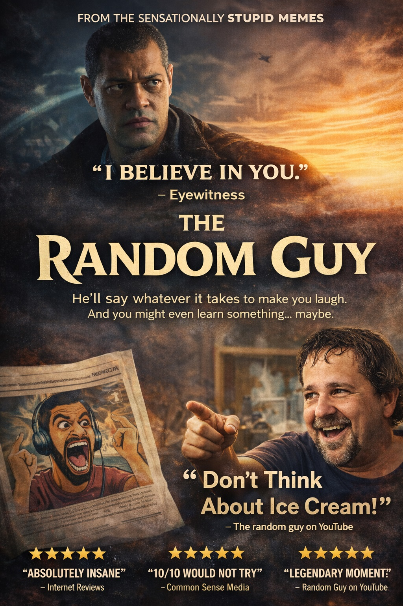

Welcome to Fakeflix, the streaming service nobody asked for but everyone secretly needed. Here you will find dramatic reviews, chaotic opinions, and enough overreaction to fill three seasons and a movie.
Review 2: The hero entered the room like he owned the place, forgot why he came in, and still somehow saved the day. This movie teaches us that confidence is more important than memory.
Review 3: Explosions, mystery, betrayal, and one suspicious side character who definitely knows too much. Fakeflix gives this one 8 confused popcorn buckets out of 10.
Review 4: A romantic comedy where nobody communicates properly for 90 minutes. Painful? Yes. Realistic? Also yes.
Review 5: A thriller so dramatic that even opening the fridge felt like an important plot twist. The soundtrack alone deserves its own award.
Review 6: The villain had an excellent speech, a cool jacket, and honestly made some strong points. We are not saying he was right. We are saying he had presence.
Review 7: The action scenes were so intense that the laws of physics quietly left the chat. Nobody questioned it. We simply accepted greatness.
Review 8: A deep emotional story about friendship, snacks, and pretending everything is fine. This one hits hard at 2 AM for no reason.
Review 9: The ending was either genius or completely ridiculous. Fakeflix is still debating it, and the debate may last longer than the film itself.
Review 10: Final verdict - absolutely worth watching with friends, family, or that one person who always says “this was better in the trailer.” Fakeflix recommends it for maximum laughter and minimum logic.

Fakeflix Original • Comedy / Drama • 2026
Warning: May cause unexpected laughter and poor life decisions.